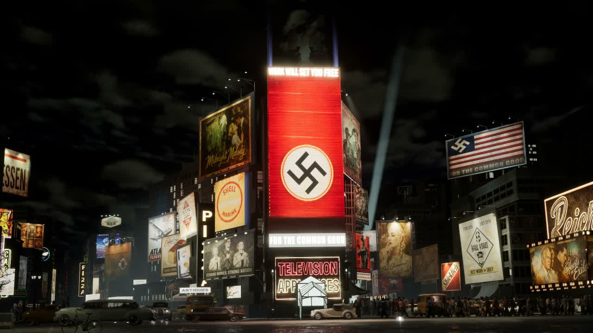

Observe before building.
I analyse a reference from its camera view first. Graphic hierarchy, proportions, material response and light become separate decisions to test.

JUNCHAO ZHU / SELECTED WORK
From visual communication to cinematic worlds.
Exploring how images, materials and atmosphere tell a story.
01 / PORTFOLIO
Atmospheric environments, stylised character presentation and reference-led scene recreation.
↗A quiet ruin. A winged presence. A study in scale, atmosphere and emergence.
 ↗
↗Playful form and glossy surfaces, explored through final renders and production views.

↗Rebuilding the identity of a street through signage, materials, light and camera.
02 / ABOUT ME
Junchao Zhu
I am a Visual Communication graduate from the University for the Creative Arts, developing my practice across 3D environments, lighting and cinematic image-making.
My starting point is the image: what draws attention, how a surface communicates, and how composition shapes the way a scene feels. I bring that graphic sensibility into spatial work, from poster and sign design to materials and camera-led environments.
In my Times Square recreation, I created many of the poster and sign graphics, developed and adjusted most of the scene materials, and built lighting against the screen reference. Buildings, people and vehicles use sourced assets, with contributions distinguished in the case study.
VISUAL COMMUNICATION PORTFOLIO ↗03 / CREATIVE PERSPECTIVE
My current approach connects observation, graphic design and scene-making.
I analyse a reference from its camera view first. Graphic hierarchy, proportions, material response and light become separate decisions to test.
A sign is more than a flat image. Its surface, illumination and place in the composition all contribute to the identity of a scene.
I distinguish scene assembly and visual development from sourced models, and use process views to explain the contribution behind the finished image.